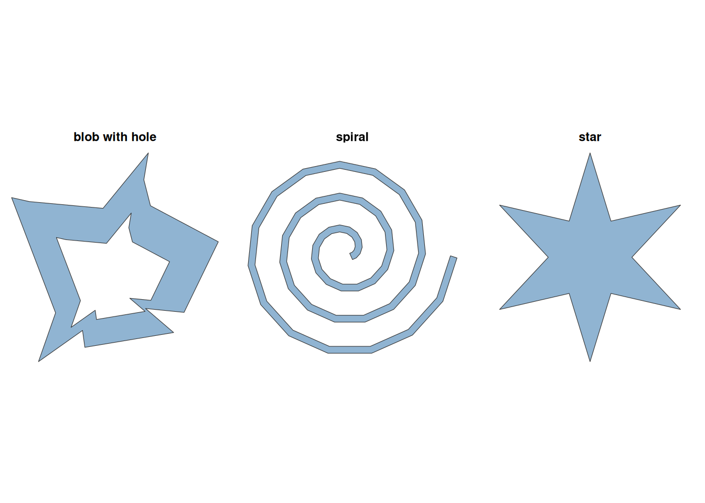
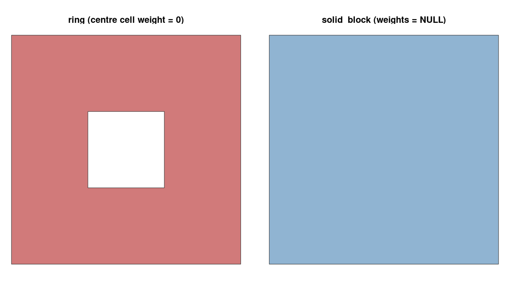
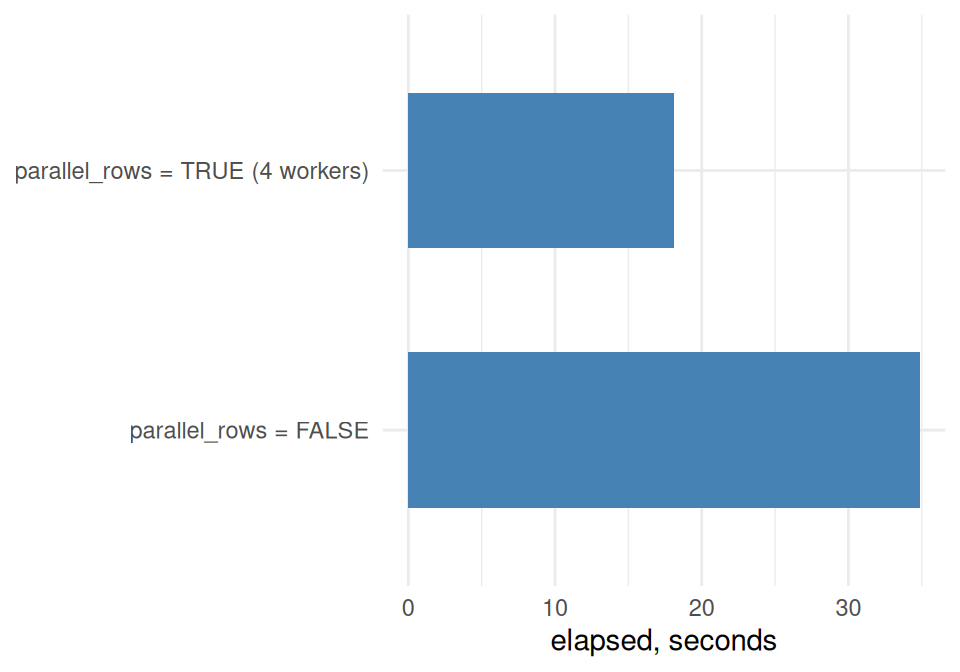

Code
library(shapeindices)
library(sf)
library(ggplot2)
library(dplyr)
theme_set(theme_minimal(base_size = 11))
library(shapeindices)
library(sf)
library(ggplot2)
library(dplyr)
theme_set(theme_minimal(base_size = 11))This vignette is a practical, code-first tour of the package: build a few synthetic shapes, run the indices on them, see what the deterministic argument changes, then move on to a real sf data frame - first row by row, then as a single weighted collection - and finish with the parallelisation option for larger jobs. For the mathematical derivation of the indices themselves (what “convexity” even means here, and where each index breaks down), see vignette("b-understanding-convexity-index", package = "shapeindices").
Three small synthetic polygons, built with base sf calls, cover a useful range of boundary behaviour: a star (deep, evenly-spaced notches), a spiral (a single winding corridor, no notches at all), and a blob with a hole (an irregular ring with an interior void).
make_star <- function(n_points, r_outer = 1, r_inner = 0.5, center = c(0, 0)) {
n <- n_points * 2
angles <- seq(pi / 2, pi / 2 + 2 * pi, length.out = n + 1)[1:n]
radii <- rep(c(r_outer, r_inner), n_points)
x <- center[1] + radii * cos(angles)
y <- center[2] + radii * sin(angles)
coords <- rbind(cbind(x, y), c(x[1], y[1]))
st_polygon(list(coords))
}
make_turtle_path <- function(n_steps, angle_deg, step0 = 1, step_growth = 0) {
angle <- 0
pos <- c(0, 0)
pts <- matrix(pos, ncol = 2)
step <- step0
for (i in seq_len(n_steps)) {
angle <- angle + angle_deg * pi / 180
pos <- pos + step * c(cos(angle), sin(angle))
pts <- rbind(pts, pos)
step <- step + step_growth
}
st_linestring(pts)
}
make_spiral <- function(n_steps = 48, angle_deg = 24, step0 = 0.35,
step_growth = 0.09, width = 0.35) {
st_buffer(make_turtle_path(n_steps, angle_deg, step0, step_growth),
dist = width, endCapStyle = "FLAT", joinStyle = "MITRE", mitreLimit = 3)
}
make_blob_hole <- function(n = 14, seed = 1, roughness = 0.55, hole_frac = 0.3) {
set.seed(seed)
angles <- sort(runif(n, 0, 2 * pi))
radii <- 1 + roughness * (runif(n) - 0.5) * 2
outer <- cbind(radii * cos(angles), radii * sin(angles))
outer <- rbind(outer, outer[1, ])
# the hole is the SAME irregular outline scaled down by sqrt(hole_frac)
# (so hole area / outer area ~= hole_frac) and traced in reverse, so sf
# treats it as an interior ring rather than a second shell. Scaling every
# radius by the same constant keeps the hole strictly inside the outer
# boundary at every angle, so the result is always a valid polygon.
hole <- outer[nrow(outer):1, ] * sqrt(hole_frac)
st_polygon(list(outer, hole))
}
star <- make_star(6, r_outer = 1, r_inner = 0.4)
spiral <- make_spiral()
blob_hole <- make_blob_hole()
basic_shapes <- list(star = star, spiral = spiral, "blob with hole" = blob_hole)
# geom_sf() + facet_wrap() can't use free scales, so normalise each shape
# onto a common bounding box (center it, scale to unit span) before faceting
normalize_geom <- function(geom, center, scale) (geom - center) * scale
shapes_norm <- lapply(names(basic_shapes), function(nm) {
g <- st_sfc(basic_shapes[[nm]])
bb <- st_bbox(g)
center <- unname(c((bb["xmin"] + bb["xmax"]) / 2, (bb["ymin"] + bb["ymax"]) / 2))
span <- max(bb["xmax"] - bb["xmin"], bb["ymax"] - bb["ymin"])
st_sf(shape = nm, geometry = normalize_geom(g, center, 1 / span))
})
shapes_sf <- do.call(rbind, shapes_norm)
ggplot(shapes_sf) +
geom_sf(fill = "steelblue", alpha = 0.6, color = "grey20") +
facet_wrap(~ shape) +
theme_void(base_size = 11) +
theme(strip.text = element_text(face = "bold"))
Each index has its own function *_index() that takes, sf or sfc objects as input. The following table briefly describes the conceptual framing of the index and some shapes that achieve the maximum values.
| Function | Description | Ex: weighted ~ 1 | Ex: unweighted ~ 1 |
|---|---|---|---|
| convexity_index() | Fraction of a connecting line between two mass-weighted random points that falls outside the shape | Any convex shape, any weighting (e.g. a square weighted by an asymmetric gradient) | Any convex shape (square, triangle, hexagon) |
| moment_of_inertia_index() | Actual polar moment of inertia about the mass centroid vs. the same total mass optimally (radially) arranged | Only a true disk - the reference is itself the optimal arrangement for any total mass | Only a true disk |
| moment_isotropy_index() | Ratio of the mass distribution's own principal moments (elongation only, ignoring overall compactness) | A >=3-fold-symmetric shape weighted by a symmetry-preserving field (e.g. a triangle weighted by distance from its own centroid) | Any >=3-fold-symmetric shape (equilateral triangle, square, regular hexagon) |
| directional_balance_index() | First-harmonic bearing bias of the mass distribution about its own centroid | A 180-degree-point-symmetric shape weighted by a symmetry-preserving field (e.g. a rectangle weighted by distance from its own centroid) | Any 180-degree-point-symmetric shape (rectangle, square) |
| span_index() | Mean distance between two mass-weighted random points vs. the same mass optimally arranged | Only a disk with density concentrated toward its centre | Only a true disk |
| radial_concentration_index() | Mean distance from a mass-weighted random point to the shape's own geometric median, vs. optimal | Only a disk with density concentrated toward its centre | Only a true disk |
| depth_index() | Mean distance from a mass-weighted random point to the boundary, vs. optimal | Only a disk with density concentrated toward its centre | Only a true disk |
| hull_ratio_index() | polygon area / convex hull area | No weighted form | Any convex shape (square, triangle, hexagon) |
| polsby_popper_index() | 4*pi*area / perimeter^2 | No weighted form | Only a true circle |
| width_length_ratio_index() | minimum bounding rectangle: shorter side / longer side | No weighted form | A regular octogon (but not hexagon or pentagon) |
| reock_index() | area / minimum bounding circle area | No weighted form | Only a true circle |
| detour_index() | equal-area-circle perimeter / convex hull perimeter | No weighted form | Only a true circle (its convex hull must itself be circular) |
| exchange_index() | shape's own area shared with an equal-area circle at its centroid | No weighted form | Only a true circle |
Called directly on a shape, for example,:
convexity_index(star)$index[1] 0.9444644
moment_of_inertia_index(spiral)$index[1] 0.220872
hull_ratio_index(blob_hole)$index[1] 0.5117867Running the seven mesh-based indices separately re-triangulates the polygon up to seven times. shape_indices() triangulates once and returns all thirteen as a named vector, which might have implications for speed.
star spiral blob with hole
convexity 0.944 0.300 0.695
moment_of_inertia 0.761 0.221 0.492
moment_isotropy 1.000 0.828 0.770
directional_balance 1.000 0.997 0.947
span 0.882 0.470 0.705
radial_concentration 0.900 0.467 0.684
depth 0.512 0.102 0.318
hull_ratio 0.462 0.270 0.512
polsby_popper 0.224 0.018 0.129
width_length_ratio 0.866 0.922 0.901
reock 0.382 0.231 0.343
detour 0.647 0.511 0.657
exchange 0.772 0.182 0.540The spiral scores low on every index (a long, narrow, winding corridor is far from convex and far from disk-like); the blob’s hole drags its indices down relative to a solid blob of the same outer boundary; the star sits in between, close to its hull_ratio_index twin but lower on convexity_index, which - unlike hull_ratio_index - is sensitive to the evenly-spaced notches cut into it.
polsby_popper_index in particular penalises the blob’s hole twice over, not once: area is already net of the hole (every index here measures net area), but perimeter grows too, since st_boundary() returns every ring - the hole’s own boundary, not just the outer one - and st_length() sums across all of them. A shape with a hole cut out of it genuinely is less compact than the solid version, so both terms moving the same direction is the right behaviour here - but it’s not a universal convention. Some Polsby-Popper implementations in the redistricting literature measure only the outer ring’s length, treating interior holes (a small enclave, a data-digitisation artifact) as compactness-irrelevant. polsby_popper_index() has no ignore_holes argument to switch between the two conventions, deliberately - that would make the same function silently answer two different questions depending on a flag. If you need to match an outer-ring-only definition, strip interior rings from the input yourself first: st_polygon(your_geometry[1]) keeps only the first (outer) ring of a single polygon.
convexity_index(), span_index(), radial_concentration_index(), directional_balance_index(), and depth_index() all have a deterministic argument.moment_of_inertia_index(),moment_isotropy_index(), and the six classic metrics don’t have this argument. They are always computed directly off the CDT mesh / convex hull / bounding circle, unaffected by this choice.deterministic = TRUE (the default for all five) computes the index over a fixed grid on the CDT mesh - O(n^2) in piece count for convexity/span, O(n) for radial_concentration/directional_balance/depth but with each triangle’s own subdivision depth (up to 256 points) scaled to its area, so only the mesh’s largest triangles pay the full cost. It’s called deterministic, not exact, deliberately: for shapes with small concavities relative to triangle size, or (for radial_concentration/directional_balance/depth) an integral with no closed form at all, it’s still only an approximation of the true value, just a non-random one (see vignette("b-understanding-convexity-index")’s convexity section for why).
deterministic = FALSE instead computes a Monte Carlo estimate: all five functions draw n_lines independent random samples and average some property of them: - convexity_index() the fraction of a connecting line’s length that falls outside the polygon, - span_index() the line’s length itself - radial_concentration_index() the distance from each sampled point to the shape’s own geometric median - directional_balance_index() the bearing of each sampled point from the shape’s own centroid, - depth_index() the distance from each sampled point to the shape’s own boundary.
Only convexity_index() ever actually builds line geometry. Sharing the argument name means one n_lines the sample count at once for all the five functions.
det_compare <- do.call(rbind, lapply(names(basic_shapes), function(nm) {
g <- basic_shapes[[nm]]
data.frame(
shape = nm,
ci_deterministic = convexity_index(g, deterministic = TRUE)$index,
ci_random_line = convexity_index(g, deterministic = FALSE, n_lines = 3000, seed = 1)$index,
span_deterministic = span_index(g, deterministic = TRUE)$index,
span_random_pair = span_index(g, deterministic = FALSE, n_lines = 3000, seed = 1)$index,
rci_deterministic = radial_concentration_index(g, deterministic = TRUE)$index,
rci_random_point = radial_concentration_index(g, deterministic = FALSE, n_lines = 3000, seed = 1)$index,
db_deterministic = directional_balance_index(g, deterministic = TRUE)$index,
db_random_point = directional_balance_index(g, deterministic = FALSE, n_lines = 3000, seed = 1)$index,
depth_deterministic = depth_index(g, deterministic = TRUE)$index,
depth_random_point = depth_index(g, deterministic = FALSE, n_lines = 3000, seed = 1)$index,
moi = moment_of_inertia_index(g)$index,
moment_isotropy = moment_isotropy_index(g)$index,
hull_ratio = hull_ratio_index(g)$index
)
}))
## t() on a data.frame containing the character `shape` column coerces
## the WHOLE thing to a character matrix first (R's usual data.frame ->
## matrix promotion rule), which silently defeats kable(digits=): there's
## nothing numeric left to round, just already-stringified full-precision
## doubles. Pulling `shape` out as column names first keeps the
## transposed matrix genuinely numeric.
det_mat <- as.matrix(det_compare[, -1])
rownames(det_mat) <- det_compare$shape
# a small base64-embedded PNG of each shape's own outline, for use as a
# column header - same pattern as vignette j's shape_thumb(), so no new
# package dependency (already pulled in transitively via knitr)
shape_thumb <- function(geom, size_px = 60, col = "grey75") {
f <- tempfile(fileext = ".png")
grDevices::png(f, width = size_px, height = size_px, bg = "transparent", res = 96)
par(mar = c(0.5, 0.5, 0.5, 0.5))
plot(st_geometry(st_sfc(geom)), col = col, border = "grey30")
grDevices::dev.off()
uri <- knitr::image_uri(f)
unlink(f)
sprintf('<img src="%s" width="%d" height="%d" style="vertical-align:middle"/><br>', uri, size_px, size_px)
}
headers <- vapply(det_compare$shape, function(nm) {
paste0(shape_thumb(basic_shapes[[nm]]), nm)
}, character(1))
knitr::kable(format = "html", t(det_mat), digits = 2, row.names = TRUE,
col.names = headers, escape = FALSE)
![]() star |
![]() spiral |
![]() blob with hole |
|
|---|---|---|---|
| ci_deterministic | 0.94 | 0.30 | 0.70 |
| ci_random_line | 0.94 | 0.30 | 0.69 |
| span_deterministic | 0.88 | 0.47 | 0.71 |
| span_random_pair | 0.88 | 0.47 | 0.71 |
| rci_deterministic | 0.90 | 0.47 | 0.68 |
| rci_random_point | 0.91 | 0.46 | 0.68 |
| db_deterministic | 1.00 | 1.00 | 0.95 |
| db_random_point | 0.97 | 0.97 | 0.94 |
| depth_deterministic | 0.51 | 0.10 | 0.32 |
| depth_random_point | 0.52 | 0.10 | 0.32 |
| moi | 0.76 | 0.22 | 0.49 |
| moment_isotropy | 1.00 | 0.83 | 0.77 |
| hull_ratio | 0.46 | 0.27 | 0.51 |
The Monte Carlo estimate is noisy, but close. relative to the deterministic one, and that noise shrinks as n_lines grows.
convexity_index() always works from the polygon’s own CDT triangle mesh - n_quad controls the quadrature refinement on that mesh (see above), but there’s no alternative tessellation to choose. Separately, two standalone mesh utilities are available for downstream geometry work, in opposite directions - neither is wired into any of the thirteen indices. convex_decompose() gives a Hertel-Mehlhorn convex decomposition (fewer, larger convex pieces than the raw triangle mesh):
tri <- cdt_triangles(star)
pieces <- convex_decompose(star)
nrow(tri) # many small triangles[1] 10
nrow(pieces) # fewer, larger convex pieces[1] 7subdivide_mesh() goes the other way - more, smaller triangles, via the same area-adaptive medial subdivision radial_concentration_index() uses internally for its own quadrature (see vignette("e-understanding-radial-concentration-index")), just kept as triangle geometries here rather than collapsed to weighted centroids:
fine <- subdivide_mesh(star)
nrow(fine) # more, smaller triangles than tri[1] 2560sf object, row by row
Real polygons usually arrive as rows of an sf data frame. shape_indices_sf() with byrow = TRUE (the default) runs shape_indices() on every row independently and appends four columns. Two North Carolina counties from the sf package - Wake (a simple, nearly-convex Piedmont county) and Dare (a mainland piece plus a separated barrier-island strip) - show the range:
nc <- st_read(system.file("shape/nc.shp", package = "sf"), quiet = TRUE) %>%
st_transform(32119) # NC state plane (meters) - nc.shp ships in NAD27 lon/lat
pair <- nc[nc$NAME %in% c("Wake", "Dare"), ]
pair_res <- shape_indices_sf(pair)
pair_res %>%
st_drop_geometry() %>%
select(NAME, convexity_index, moment_of_inertia_index, span_index, hull_ratio_index) %>%
knitr::kable(format = "html", digits = 3, row.names = FALSE)| NAME | convexity_index | moment_of_inertia_index | span_index | hull_ratio_index |
|---|---|---|---|---|
| Wake | 0.995 | 0.856 | 0.939 | 0.905 |
| Dare | 0.738 | 0.228 | 0.545 | 0.265 |
byrow = FALSE treats every row instead as a weighted sub-polygon of one overall shape (st_union(x)), returning a single-row result. weights = NULL (the default) weights each row by its own physical area, which reproduces the plain unweighted indices on the union; a column name or numeric vector weights rows by something else instead - here, births (BIR74) as a population proxy for four contiguous Research Triangle counties:
triangle_counties <- nc[nc$NAME %in% c("Wake", "Durham", "Orange", "Chatham"), ]
by_area <- shape_indices_sf(triangle_counties, byrow = FALSE, id = "weighted_by_area")
by_births <- shape_indices_sf(triangle_counties, byrow = FALSE,
weights = "BIR74", id = "weighted_by_births")
rbind(by_area, by_births) %>%
st_drop_geometry() %>%
knitr::kable(format = "html", digits = 3, row.names = FALSE)| id | convexity_index | moment_of_inertia_index | moment_isotropy_index | directional_balance_index | span_index | radial_concentration_index | depth_index | hull_ratio_index | polsby_popper_index | width_length_ratio_index | reock_index | detour_index | exchange_index | total_weight |
|---|---|---|---|---|---|---|---|---|---|---|---|---|---|---|
| weighted_by_area | 0.983 | 0.815 | 0.507 | 0.984 | 0.917 | 0.924 | 0.685 | 0.831 | 0.514 | 0.686 | 0.483 | 0.83 | 0.807 | 5811314465 |
| weighted_by_births | 0.990 | 0.697 | 0.643 | 0.960 | 0.849 | 0.852 | 0.507 | 0.831 | 0.514 | 0.686 | 0.483 | 0.83 | 0.807 | 27264 |
Same union geometry, same hull_ratio_index (it has no weighted form - it’s a property of the convex hull’s boundary, not a sum over pieces) - but convexity_index, moment_of_inertia_index, and span_index all shift once births, rather than raw land area, decide how much each county’s shape “counts”.
Whenever rows genuinely differ in weight, each row’s own boundary is supplied as a hard constraint on the combined triangulation, so no triangle can ever straddle two rows - density is allocated onto the mesh exactly, not approximated by averaging. This matters most for a handful of large, high-density rows sitting next to many small, low-density ones, where a single coarse triangle could otherwise span rows with very different weights. It falls back to the coarser, union-only mesh automatically (with a warning) if the kept rows genuinely overlap rather than just touch.
A row with weight 0 or NA isn’t just zero-weighted - it’s treated as a hole, excluded from the union entirely. This is a design decision of the package. That means switching weights can change poly_u itself, not just how it’s weighted - two calls that differ only in weights can disagree on hull_ratio_index too, even though hull_ratio_index has no weighted form of its own. It was simply computed on two different shapes.
A 3x3 grid of unit squares makes this concrete. With every cell kept (weights = NULL), the union is a solid, convex block. Exclude just the centre cell (weight 0) and the union becomes a square ring - same 8 outer cells, but now with an actual hole punched through the middle, not just a smaller boundary:
cell <- function(cx, cy) st_polygon(list(rbind(
c(cx - 0.5, cy - 0.5), c(cx + 0.5, cy - 0.5),
c(cx + 0.5, cy + 0.5), c(cx - 0.5, cy + 0.5), c(cx - 0.5, cy - 0.5))))
ctr <- expand.grid(x = -1:1, y = -1:1)
grid9 <- st_sf(pop = ifelse(ctr$x == 0 & ctr$y == 0, 0, 10),
geometry = st_sfc(mapply(cell, ctr$x, ctr$y, SIMPLIFY = FALSE), crs = 3857))
solid_block <- shape_indices_sf(grid9, byrow = FALSE, id = "solid_block") # keeps all 9
ring <- shape_indices_sf(grid9, byrow = FALSE, weights = "pop", id = "ring") # centre excluded
rbind(solid_block, ring) %>%
st_drop_geometry() %>%
knitr::kable(format = "html", digits = 3, row.names = FALSE)| id | convexity_index | moment_of_inertia_index | moment_isotropy_index | directional_balance_index | span_index | radial_concentration_index | depth_index | hull_ratio_index | polsby_popper_index | width_length_ratio_index | reock_index | detour_index | exchange_index | total_weight |
|---|---|---|---|---|---|---|---|---|---|---|---|---|---|---|
| solid_block | 1.000 | 0.955 | 1 | 1 | 0.980 | 0.983 | 0.887 | 1.000 | 0.785 | 1 | 0.637 | 0.886 | 0.909 | 9 |
| ring | 0.862 | 0.764 | 1 | 1 | 0.875 | 0.856 | 0.480 | 0.889 | 0.393 | 1 | 0.566 | 0.836 | 0.840 | 80 |
grid_compare <- rbind(
solid_block %>% mutate(label = "solid_block (weights = NULL)"),
ring %>% mutate(label = "ring (centre cell weight = 0)")
)
ggplot(grid_compare) +
geom_sf(aes(fill = label), alpha = 0.6, color = "grey20", show.legend = FALSE) +
facet_wrap(~ label) +
scale_fill_manual(values = c("solid_block (weights = NULL)" = "steelblue",
"ring (centre cell weight = 0)" = "firebrick")) +
theme_void(base_size = 11) +
theme(strip.text = element_text(face = "bold"))
hull_ratio_index drops from 1 to 0.889 (= 8/9 - the ring’s true area over the same convex hull area the solid block had), and convexity_index drops even further (1 to 0.862), since a line between two points on opposite sides of the ring is forced to cross the hole. This is exactly what happened with real population data earlier in this vignette: rows with 0 population get excluded as holes, which can disconnect a collection into several pieces and punch new interior holes through it - a materially different (and usually more meaningful) shape than “count every row, weighted or not.”
This package has one parallelism knob, at the row level: shape_indices_sf()’s parallel_rows argument. There is no parallelism within a single index call - a single very complex polygon can’t be split across cores, only a collection of rows can.
With byrow = TRUE, parallel_rows = TRUE distributes whole rows across the active future::plan() via furrr - this dispatch is unconditional (no fast-path short-circuit), so it delivers real multi-core speedups. Row-level parallelism is only worth turning on once each row’s own cost is bounded - pass deterministic_max_tri (see shape_indices()) so no single county can blow up into an expensive deterministic-mode computation (O(n^2) for convexity/span, O(n) with a large constant for radial_concentration) inside a worker. Raising deterministic_max_tri and n_lines below (relative to the row-by-row example earlier) gives every county enough work to make the per-worker overhead worth paying:
library(furrr)
future::plan(future::sequential)
t_seq_rows <- system.time(
res_seq <- shape_indices_sf(nc, deterministic_max_tri = 60, n_lines = 6000, seed = 1,
parallel_rows = FALSE)
)
future::plan(future::multisession, workers = 4)
t_par_rows <- system.time(
res_par_rows <- shape_indices_sf(nc, deterministic_max_tri = 60, n_lines = 6000, seed = 1,
parallel_rows = TRUE)
)
future::plan(future::sequential)
timing <- data.frame(
mode = c("parallel_rows = FALSE", "parallel_rows = TRUE (4 workers)"),
elapsed = c(t_seq_rows[["elapsed"]], t_par_rows[["elapsed"]])
)
timing$speedup <- timing$elapsed[1] / timing$elapsed
knitr::kable(format = "html", timing, digits = 2, row.names = FALSE)| mode | elapsed | speedup |
|---|---|---|
| parallel_rows = FALSE | 34.87 | 1.00 |
| parallel_rows = TRUE (4 workers) | 18.13 | 1.92 |
ggplot(timing, aes(x = mode, y = elapsed)) +
geom_col(fill = "steelblue", width = 0.6) +
labs(x = NULL, y = "elapsed, seconds") +
coord_flip()
Both modes agree on every county’s indices (not shown - parallelising changes how the 100 rows get computed, not the values themselves); the gain is in elapsed. Overhead from spinning up workers is fixed per call, so it matters less as the batch gets bigger or each row gets more expensive - not worth turning on for a handful of small, cheap polygons, but pays off exactly on the kind of workload this package targets: many real-world rows, each potentially complex enough to need deterministic_max_tri’s random-line fallback. For a real workload, size workers to future::availableCores() (or fewer, to leave headroom) and prefer future::multicore over future::multisession on Mac/Linux, which forks rather than starting fresh R sessions per worker.
simplify_tolerance: reducing boundary detail, not just mesh size
prepare_polygon(), shape_indices(), and shape_indices_sf() all accept a simplify_tolerance argument: an st_simplify() pass, applied once the polygon is already cleaned and (for byrow = FALSE) already unioned, before triangulating. Its units are whatever the geometry’s own CRS uses at that point - metres for geographic (lon/lat) input, since these functions auto-project that to a metric CRS themselves, but whatever unit an already-projected input’s CRS uses otherwise (many US State Plane CRSs are US survey feet, not metres) - a warning fires if that unit isn’t metres, since the same numeric tolerance means a very different amount of simplification depending on which.
It’s worth reaching for on genuinely detailed real-world boundaries (block/parcel data with hundreds of thousands of vertices), for a reason that isn’t obvious from mesh size alone: convexity_index()’s deterministic = FALSE mode tests candidate lines against every boundary edge of the polygon, and that edge count doesn’t shrink just because the triangulated mesh does - simplifying the boundary itself is what actually bounds it.
With byrow = FALSE, simplify the union, never the rows beforehand. shape_indices_sf(byrow = FALSE) applies simplify_tolerance to st_union(x) itself, after every row’s own boundary has already merged with its neighbours - internal edges shared between adjacent rows are already gone by that point, so there’s nothing there for simplification to misalign. Simplifying each row independently first - a natural-looking alternative, and the wrong one - simplifies the same shared edge differently on either side of it, turning what used to be a clean tessellation into thousands of sliver gaps between rows that no longer quite touch. As a concrete example, on one real 50,424-row Census-block dataset: unioning the raw rows gives one clean, ~50,000-vertex polygon, while independently simplifying every row first and then unioning gives 1,851 disjoint sliver fragments instead - more total boundary than not simplifying at all, which at that scale is the difference between a computation that fits in memory and one that doesn’t. Passing simplify_tolerance here instead keeps the union at one part and cuts its boundary edge count by an order of magnitude. Weight accuracy is unaffected by design: the row-level weight overlay always uses the unsimplified original rows - only the mesh comes from the simplified union - so a tolerance modest relative to the shape’s own scale still captures upward of 99% of the true row-level weight total.